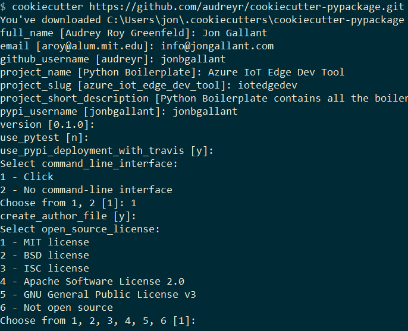
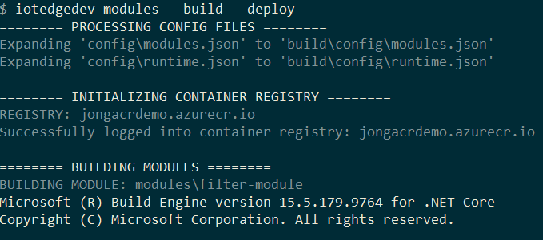
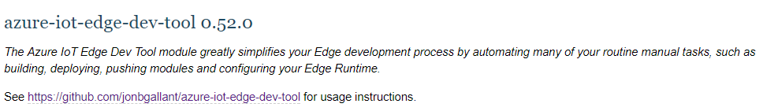

I just published my first official distributable Python package to PyPI, which makes it available to install via pip install. It’s called Azure IoT Edge Dev Tool (PyPI, GitHub, Video) and helps IoT Edge developers with inner loop dev tasks (dev, test, debug, build, push, release). This post is less about the actual pip package and more about my experience building and distributing one.
Coding in Python is easy. Distributing it as a Python package is hard. 5% of the effort is coding. 95% of the effort goes into figuring out how to distribute the thing. I spent so many hours struggling through this on my own that I had to share to hopefully save you some ticks.
Let’s jump right in.
Python Version 2 or 3
My project works with both Python 2.7 and Python 3.6, but I should have only coded it for Python 3. If you don’t absolutely need to support Python 2.7, then don’t. I spent way too much time debugging issues that worked on one version but not the other. I’m building a proof-of-concept package, so I could easily ask my users to install Python 3. In more official organization supported packages, you might not have that luxury.
Isolate Installs with Virtual Environments
I just jumped right in to writing Python code and didn’t realize the concept of Virtual Environments existed in Python. In a nutshell, it allows you to isolate pip installs from other pip installs, so you avoid versioning conflicts with global packages. You can read more about them here: https://docs.python.org/3/tutorial/venv.html
Python Package Scaffold: Cookiecutter
I discovered Cookiecutter, the Python package project scaffolding tool, about half way through the creation of my pip package. I wish I would have known about it earlier, because it is really helpful. It will scaffold out an entire project for you with unit tests, Travis integration, setuptools and so on. I used the Cookiecutter PyPackage template, but you can find a lot more of them here: A Pantry Full of Cookiecutters
Create Project
pip install -U cookiecutter
cookiecutter https://github.com/audreyr/cookiecutter-pypackage.git

Project Name
I wanted to use iotedgedev as my PyPI name and GitHub repo and I also wanted iotedgedev to be the command line name. The cookiecutter template didn’t allow that directly so I had to make a few manual edits. I created a project named iotedgedev and then made these changes:
- In
setup.pychangedsetup(name="iotedgedev") - In
.travis.ymlandtravis_pypi_setup.pychangediotedgedevtoiotedgedev
Reserve Your Project Name on both PyPI Test and PyPI Production Environments
PyPI Test(https://test.pypi.org) and PyPI Production(https://pypi.org) have different backends, so you need to register your project name with both of them. Do this immediately after you decide on a name, because someone could register it or you could run into an issue like I did, where I was getting a ]403 because someone already registered the name against the PyPI Test environment](https://github.com/pypa/warehouse/issues/4607). PyPI was able to resolve the issue - but you might not be able to. Reserve your names.
Testing: Tox and unittest
The template I chose uses Tox and unittest (not pytest) so I just went with that. The tests are in the tests folder and were pretty straight forward to write. Granted, I only did a few simple tests and might switch to pytest at a later time if need be, but for my case unittest worked fine.
Tox is configured in the tox.ini file. You can set it up to run your code against any Python version and linters such as flake.
When you want to run your tests, you simply navigate to your root and execute tox.
Install Package Locally with Editable Installs
When I first started, I was using full commands such as python edge.py runtime --setup --start, but then I discovered “Editable Installs”, which will install a package from a local or github source without having to have it on PyPI
So, I ran pip install -e . from the root of my project and iotedgedev is now available.
This is super helpful because I can just edit my code and when I go back to the command prompt, iotedgedev commands are all up-to-date without any other installs required.
Package Distribution: PyPI
After you have coded your project, you are going to want to upload it to PyPI test environment to test it out first and then, when ready, upload it to the PyPI production environment.
Setuptools, not distutils
The Cookiecutter project I used included setuptools configuration. After a quick search, I discovered that’s the preferred route, so I just went with it.
Wheel, not egg
Wheel and Egg are packaging formats, you can read more about them here. I went with Wheel because it appears to be the recommended approach and it worked the first time I tried it.
To generate a new wheel: python setup.py bdist_wheel
Bumpversion
This package will find all the appropriate versions and bump them up by one when you call it.
To bump the version: bumpversion minor
Upload Process
-
Push Changes
git add . git commit -m "" git push -
Bumpversion and create Wheel
bumpversion minor && python setup.py bdist_wheel -
Push Tags
git push --tags -
Upload with Twine
#test twine upload -r pypitest dist/azure_iot_edge_dev_tool-0.50.0-py2.py3-none-any.whl #production twine upload -r pypi dist/azure_iot_edge_dev_tool-0.52.0-py2.py3-none-any.whlThis will read from .pypirc file in the root of your project.
Store PyPI Settings in .pypirc
Store your PyPI settings in a .pypirc file in the root of your project, which looks something like this:
[distutils]
index-servers =
pypi
pypitest
[pypi]
repository=https://pypi.python.org/pypi
username=yourusername
password=
[pypitest]
repository=https://test.pypi.org/legacy/
username=yourusername
password=
That way when you call twine upload -r pypi ... it will use the repository, username and password in the file instead of typing it every time you push to PyPI.
Test Pip Install
When you run pip install it will point to production by default, you need to pass --no-cache-dir, --index-url and an --extra-index-url for it to ignore local packages, point to the test env, and use the production env for project dependencies.
pip --no-cache-dir install --index-url https://test.pypi.org/simple/ iotedgedev --extra-index-url https://pypi.org/simple
Command Line Arguments: Click
I started off with argparse and evaluated a few others, but landed on Click because I like how it is integrated into the code. I had everything working with argparse and it was fine, but one I started writing tests I really appreciated that Click came with a CLiRunner object that was really helpful. I converted everything to Click in an hour or so. You can see the final result here: iotedgedev/iotedgedev/cli.py. You can view the full command structure on GitHub here: iotedgedev/README.md
Help with -h and --help
You can get both -h and --help for help commands if you pass this CONTEXT_SETTINGS = dict(help_option_names=["-h", "--help"]) into the @click.group statement.
CONTEXT_SETTINGS = dict(help_option_names=['-h', '--help'])
@click.group(context_settings=CONTEXT_SETTINGS, invoke_without_command=True)
Version Command
You can easily get a --version command by adding @click.version_option() above your main method:
@click.version_option()
def main():
Help Print
You can print out the help message using the following code. In my main Package, I want to print help if not commands are passed in and I want there to be an option hanging off the root. This is the only way I could figure out how to do that.
def main(set_config):
if(set_config):
utility.set_config()
else:
ctx = click.get_current_context()
if ctx.invoked_subcommand == None:
click.echo(ctx.get_help())
Echo instead of Print Statements
Click comes with an echo method that allows you to colorize your print statements and is Python 2/3 safe. One of the last things I did in the project was convert all of my statements to use click.secho. Coloring my output helps differentiate it from the output of the out of proc calls I make.
Here, I’m using a mixture of Yellow and White, which looks White and Grey with my current ConEmu color scheme.

Out of Process Calls: subprocess.Popen
My script makes a bunch of out of process calls to things like dotnet, docker and iotedgectl. I toyed around with a bunch of ways to do this and finally landed on subprocess.Popen because I could get both the status code and the result (print statements) from the call. I wrapped mine in a method like this:
def exe_proc(self, params, shell=False):
proc = subprocess.Popen(
params, stdout=subprocess.PIPE, stderr=subprocess.PIPE, shell=shell)
stdout_data, stderr_data = proc.communicate()
if stdout_data != "":
self.output.procout(self.decode(stdout_data))
if proc.returncode != 0:
self.output.error(self.decode(stderr_data))
sys.exit()
https://github.com/Azure/iotedgedev/blob/master/iotedgedev/utility.py#L24
PyPI Readme
PyPI does not natively support Markdown, although the website says it does, after many hours of trying I could not get it to work. They do support RST and there are ways to convert Markdown to RST - but nothing was working for me. The Markdown to RST converter I was using pyandoc was not generating valid RST and I was not interested in maintaining two versions (Markdown & RST) of my Readme. If this project was officially supported by Microsoft, then I would have figured it out, but this is a proof-of-concept project, so I decided to abandon the PyPI readme in favor of GitHub markdown and then linked to GitHub from PyPI.
See link to github in this image:

Environment Variables: Python-DotEnv
My package heavily relies on Environment Variables so I can have a very simple command interface. I did not want to ask the user to type all them in at the command line. I used dotenv in my node projects and was happy to see that there’s one available for Python as well: Python-DotEnv. You can view my .env file here:iotedgedev/template/.env.tmp and you can see how I’m loading it here: iotedgedev/envvars.py
This will load the .env from the current directory:
from dotenv import load_dotenv
dotenv_path = os.path.join(os.getcwd(), '.env')
load_dotenv(dotenv_path)
And make all the Variables available via os.environ["NAME"]
Make sure you add
.envto your .gitignore file.
Resources
I found this video really helpful: Python Packaging from Init to Deploy
Conclusion
I still have a lot to learn about Python and package distribution, but I feel like I’m in decent shape after getting this far. I went back and forth from hating Python to sometimes liking it. It took a lot less time to write the Python code then it did to distribute it.
I really hope this posts saves you a time.
Jon